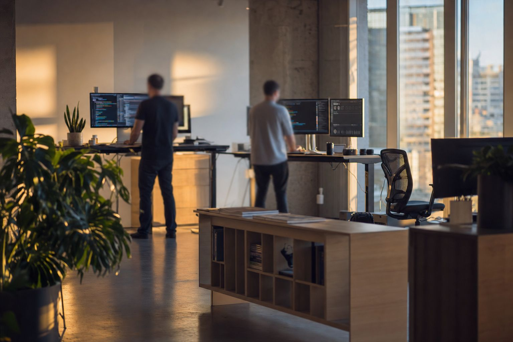

Web application development
Responsive interfaces and browser-based systems using HTML, CSS, JavaScript and PHP, including document-driven business workflows.
- HTML / CSS
- JavaScript
- PHP
Pretoria · Gauteng · South Africa
Leano ITC develops practical software and business systems, with hands-on experience across web applications, databases, Android development and technical software review.
What I do
I build software around real workflows rather than forcing a business into a technology stack. My hands-on work includes database-backed business systems, responsive web interfaces and Android applications.
I also spend significant time reviewing software: tracing defects, checking security and accessibility, testing behaviour, and improving maintainability before a system is treated as production-ready.

Services
The service list stays deliberately narrow. It reflects technologies and problem areas I have actually worked with, not every framework I have ever opened in a browser.
Responsive interfaces and browser-based systems using HTML, CSS, JavaScript and PHP, including document-driven business workflows.
Ordering, stock, purchasing, users, reporting and workflow features for database-backed business applications, including practical process automation.
Relational data modelling, queries, reporting and application/database integration using SQL and MySQL-compatible systems, with structured records and business documents driven by application data.
Android applications built with Kotlin and Jetpack Compose, including local-network, device-aware and security-focused functionality.
Connecting application components and services through HTTP requests, server-side endpoints, AJAX, JSON data exchange and reliable form workflows.
Codebase reviews, defect analysis, security-focused checks, accessibility review, release-readiness assessment and progressive software modernisation.
Approach
The same loop applies whether the job is a new feature, a bug sweep, a workflow improvement or a full software review. AI-assisted research and engineering tools may support analysis, prototyping, debugging and documentation, while implementation decisions remain grounded in the actual system.
01
Map the workflow, inspect the existing implementation and identify the real constraint before changing it.
02
Choose the smallest architecture and interface change that solves the problem without unnecessary technology.
03
Implement in focused batches, preserving existing behaviour and tracing shared-code consumers before refactoring.
04
Run available syntax, static, functional and responsive checks, then separate verified facts from assumptions.
Selected projects
These are development projects I have actually worked on. They are presented as projects, not as client testimonials or fabricated case studies.
Business systems · PHP · MySQL
A database-backed ordering and business management system covering products, stock, purchasing, users, reporting, activity logging and transactional workflows. The project has also been subjected to structured security, QA and maintainability audits.
Android · Kotlin · Jetpack Compose
An Android Wi-Fi scanner and local-network device discovery application with security diagnostics, device inspection, biometric protection and coroutine-based scanning.
Working stack
This list is intentionally conservative. Familiarity alone is not treated as professional delivery experience.
Contact
Send a short description of the problem. I will use the details to determine whether I can help and what the next sensible step is.